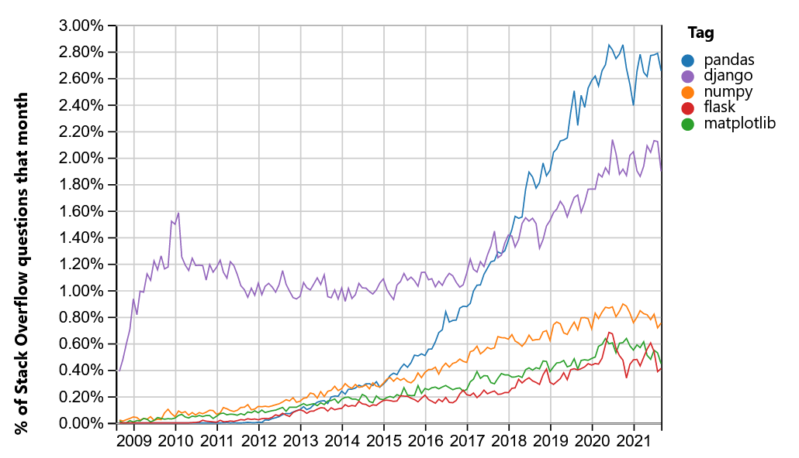

The rise of the Python ecosystem for Data Processing
2020-11-17
R
- Programming language and free software environment
- Open source
- Interactive
- Ecosystem
- Statistical computing
- Graphics, vizualisation
- Data analysis

Julia

- Fast: designed for high performance
- Open source
- Dynamically typed, interactive use
- Ecosystem
- Scientific and parallel computing
- Visualisation and plotting
- Data science and machine learning
Python
- Interpreted and so interactive language
- Really simple syntax (Code readability)
- General-purpose programming language
- Many, many (many) libraries
- A lot of scientific ones!
- Ecosystem
- Scientific and parallel computing
- Visualisation and plotting
- ML, DL
- Web developement

Quizz
What is the most used language (in Data Science)?
- Answer A: R
- Answer B: Go
- Answer C: Python
- Answer D: Matlab
![Answer]()
Answer link Key: pc
Pandas

- Deal with Dataframes, e.g. tables
- Data manipulation and analysis
- Numerical tables and time series
- Statistics, transformations, joins…
import pandas as pd
pd.read_csv('Myflie.csv')
pd.describe()
Numpy

- Manipulate N-dimensionnal arrays
- Numerical computing tools (math functions, linear algebra, Fourier transform, …)
- Performant: core is well-optimized C code
- Easy and de facto standard syntax
Nearly every scientist working in Python draws on the power of NumPy.
# The standard way to import NumPy:
import numpy as np
# Create a 2-D array, set every second element in
# some rows and find max per row:
x = np.arange(15, dtype=np.int64).reshape(3, 5)
x[1:, ::2] = -99
x
array([[ 0, 1, 2, 3, 4],
[-99, 6, -99, 8, -99],
[-99, 11, -99, 13, -99]])
x.max(axis=1)
array([ 4, 8, 13])
# Generate normally distributed random numbers:
rng = np.random.default_rng()
samples = rng.normal(size=2500)Xarray

- Manipulate N-dimensionnal labelled arrays and datasets
- Introduce dimensions, coordinates and attributes on top of Numpy
- Borrows heavily from Pandas

Matplotlib

- Base/Reference plotting library
- For Python and Numpy
- Static, animated, and interactive visualizations
- Designed to be as usable as MATLAB
fig, ax = plt.subplots(subplot_kw={"projection": "3d"})
# Plot the surface.
surf = ax.plot_surface(X, Y, Z, cmap=cm.coolwarm,
linewidth=0, antialiased=False)
# Customize the z axis.
ax.set_zlim(-1.01, 1.01)
ax.zaxis.set_major_locator(LinearLocator(10))
# A StrMethodFormatter is used automatically
ax.zaxis.set_major_formatter('{x:.02f}')
# Add a color bar which maps values to colors.
fig.colorbar(surf, shrink=0.5, aspect=5)
plt.show()
Jupyter (Lab and Notebook)


- Open source web application
- Create and share documents that contain live code
- Equations, visualizations and narrative text
- Interactive programming and visualizing
- Usage:
- data cleaning and transformation,
- numerical simulation,
- statistical modeling,
- data visualization,
- machine learning
- Used by Google Colab or Kaggle
Quizz
Which tools allows manipulating tabular data?
- Answer A: Numpy
- Answer B: Xarray
- Answer C: Pandas
- Answer D: Jupyter
![Answer]()
Answer link Key: fp
Dask
- Provides advanced parallelism for analytics
- First designed as allowing to process datasets bigger than memory
- Now from local computer to clusters, to HPC or Cloud computing
- Scales Numpy and Pandas with same interfaces
- More low level APIs for distributing any algorithm
- More this afternoon
import dask.dataframe as dd
df = dd.read_csv('2014-*.csv')
df.describe().compute()
PySpark

- Spark is Scala (JVM based), but for data scientists, provides Python and R interface
- This means some complexity and translation between languages

Others

Quizz
What Dask does better than Spark (multiple choices)?
- Answer A: Dataframes manipulation
- Answer B: N-dimensionnal Arrays manipulation
- Answer C: Low level parallelization
- Answer D: Scaling to Petabytes dataset
- Answer E: Reliability
![Answer]()
Answer link Key: dt
Landscape

Seaborn

- Based on Matplotlib
- Integrates closely with Pandas
- Dataset oriented to produce informative plots

Plotly

- Interactive, publication-quality graphs
- Make dashboard with Dash

Pyviz


- HoloViews: Declarative objects for instantly visualizable data, building Bokeh plots from convenient high-level specifications
- GeoViews: Visualizable geographic data that that can be mixed and matched with HoloViews objects
- Bokeh: Interactive plotting in web browsers, running JavaScript but controlled by Python
- Panel: Assembling objects from many different libraries into a layout or app, whether in a Jupyter notebook or in a standalone serveable dashboard
- Datashader: Rasterizing huge datasets quickly as fixed-size images
- hvPlot: Quickly return interactive HoloViews or GeoViews objects from your Pandas, Xarray, or other data structures
- Param: Declaring user-relevant parameters, making it simple to work with widgets inside and outside of a notebook context
Quizz
Matlplotlib is the only vizualisation library for Python.
![Answer]()
Answer link Key: jf
Sickit Learn

- Simple and efficient tools for predictive data analysis
- Built on NumPy, SciPy, and matplotlib
- Every classical ML Algorithms
- Standard interface with Pipelines, estimators, transformers
- No GPU support (so not good for Deep Learning)
from sklearn.ensemble import RandomForestClassifier
clf = RandomForestClassifier(random_state=0)
X = [[ 1, 2, 3], # 2 samples, 3 features
[11, 12, 13]]
y = [0, 1] # classes of each sample
clf.fit(X, y)TensorFlow, Keras, Pytorch

- Deep Learning on GPU with no previous knowledge
- Keras on top of Tensorflow
- Tensorflow complete platform, with TensorBoard and other tools
- Always trolls about Keras/TF vs PyTorch

Gradient boosting algorithms
XGBoost
- Distributed gradient boosting library
- Efficient, flexible and portable
- XGBoost provides a parallel tree boosting
- Runs on major distributed environment (Hadoop, SGE, MPI, Spark)
- Solve problems beyond billions of examples

LighGBM
- Distributed gradient boosting framework
- Efficient, Faster, lower memory usage, better accuracy
- Support of parallel, distributed, and GPU learning
- Capable of handling large-scale data

Quizz
Which is the best Deep Learning library in Python?
- Answer A: Sickit-Learn
- Answer B: Keras
- Answer C: TensorFlow
- Answer D: PyTorch
- Answer E: XGBoost
![Answer]()
Answer link Key: hy
Packaging: Pip / Conda


- Package libraries
- Make them available on repositories
- Build environments automatically
| conda | pip | |
|---|---|---|
| manages | binaries | wheel or source |
| can require compilers | no | yes |
| package types | any | Python-only |
| create environment | yes, built-in | no, requires virtualenv or venv |
| dependency checks | yes | no |
Difference between Conda and Pip according to Anaconda.
Numba

Numba makes Python code fast
- Translates Python functions to optimized machine code at runtime
- Use LLVM compiler library
- Python can approach the speeds of C or FORTRAN
- Just apply one of the Numba decorators
from numba import jit
import random
@jit(nopython=True)
def monte_carlo_pi(nsamples):
acc = 0
for i in range(nsamples):
x = random.random()
y = random.random()
if (x ** 2 + y ** 2) < 1.0:
acc += 1
return 4.0 * acc / nsamplesBinder

Turn a Git repo into a collection of interactive notebooks